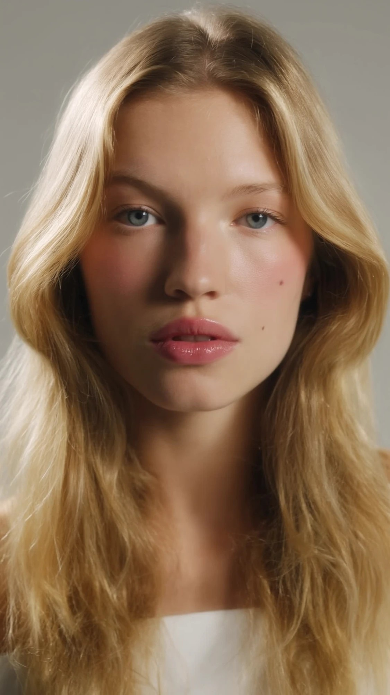
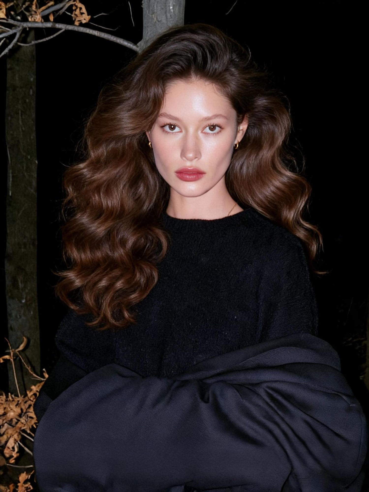

пример: реалистичный креатив

пример: реалистичный креатив

реалистичные креативы
Seedream
Для реалистичных креативов чаще всего берём Seedream: он уверенно держит фактуру кожи и ткани, поэтому нужный кадр нередко получается с одной-двух генераций.
Но с людьми есть нюанс: по умолчанию он тянется к азиатской, чаще корейской внешности.
Не оставляйте внешность на волю модели: сразу чётко описывайте героя.